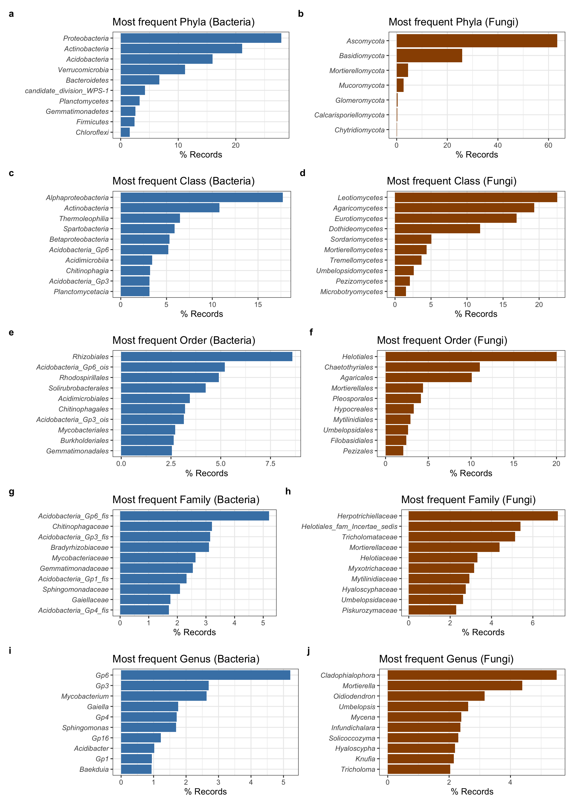

library(gbifexplorer)
library(tidyverse)
library(patchwork)Taxonomic coverage
Explore taxonomic coverage
All taxa
occ <- read_csv("output/dwc_db/occ.csv")
all_taxa <- taxonomic_cov(occ |> filter(kingdom == "Bacteria"),
category = c("kingdom", "phylum", "class", "order", "family", "genus"))
custom_report_taxonomy <- function(x) {
}
all_taxa |>
purrr::map(~report_taxonomy(., top=10)) |>
purrr::list_transpose()[[1]]
All records belong to the kingdom Bacteria
There are 17 phylum included in the dataset. The 10 phylum most represented in the dataset are: Proteobacteria (27.89 %), Actinobacteria (21.11 %), Acidobacteria (15.94 %), Verrucomicrobia (11.17 %), Bacteroidetes (6.74 %), candidate_division_WPS-1 (4.21 %), Planctomycetes (3.29 %), Gemmatimonadetes (2.56 %), Firmicutes (2.41 %) and NA (1.89 %).
There are 48 class included in the dataset. The 10 class most represented in the dataset are: Alphaproteobacteria (17.72 %), Actinobacteria (10.78 %), NA (8.73 %), Thermoleophilia (6.46 %), Spartobacteria (5.89 %), Betaproteobacteria (5.31 %), Acidobacteria_Gp6 (5.21 %), Acidimicrobiia (3.44 %), Chitinophagia (3.21 %) and Acidobacteria_Gp3 (3.14 %).
There are 77 order included in the dataset. The 10 order most represented in the dataset are: NA (20.22 %), Rhizobiales (8.6 %), Acidobacteria_Gp6_ois (5.21 %), Rhodospirillales (4.9 %), Solirubrobacterales (4.25 %), Acidimicrobiales (3.44 %), Chitinophagales (3.21 %), Acidobacteria_Gp3_ois (3.14 %), Mycobacteriales (2.71 %) and Burkholderiales (2.64 %).
There are 139 family included in the dataset. The 10 family most represented in the dataset are: NA (28.72 %), Acidobacteria_Gp6_fis (5.21 %), Chitinophagaceae (3.21 %), Acidobacteria_Gp3_fis (3.14 %), Bradyrhizobiaceae (3.1 %), Mycobacteriaceae (2.63 %), Gemmatimonadaceae (2.55 %), Acidobacteria_Gp1_fis (2.33 %), Sphingomonadaceae (2.09 %) and Gaiellaceae (1.76 %).
There are 286 genus included in the dataset. The 10 genus most represented in the dataset are: NA (39.92 %), Gp6 (5.21 %), Gp3 (2.7 %), Mycobacterium (2.63 %), Gaiella (1.76 %), Gp4 (1.71 %), Sphingomonas (1.69 %), Gp16 (1.23 %), Acidibacter (1.02 %) and Gp1 (0.95 %).Bacteria
b <- taxonomic_cov(occ |> filter(kingdom == "Bacteria"),
category = c("kingdom", "phylum", "class", "order", "family", "genus"))
report <- b |>
purrr::map(~report_taxonomy(., top=10)) |>
purrr::list_transpose()Fungi
f <- taxonomic_cov(occ |> filter(kingdom == "Fungi"),
category = c("kingdom", "phylum", "class", "order", "family", "genus"))
report <- f |>
purrr::map(~report_taxonomy(., top=10)) |>
purrr::list_transpose()Plot
b_genus <- b$genus |>
filter(!is.na(genus)) |>
top_n(10) |>
barplot_freq() +
ggtitle("Most frequent Genus (Bacteria)") +
theme(
axis.text.y = element_text(face = "italic")
)
f_genus <- f$genus |>
filter(!is.na(genus)) |>
top_n(10) |>
barplot_freq(bar_color = "#994F00") +
ggtitle("Most frequent Genus (Fungi)") +
theme(
axis.text.y = element_text(face = "italic")
)
b_family <- b$family |>
filter(!is.na(family)) |>
top_n(10) |>
barplot_freq() +
ggtitle("Most frequent Family (Bacteria)") +
theme(
axis.text.y = element_text(face = "italic")
)
f_family <- f$family |>
filter(!is.na(family)) |>
top_n(10) |>
barplot_freq(bar_color = "#994F00") +
ggtitle("Most frequent Family (Fungi)") +
theme(
axis.text.y = element_text(face = "italic")
)
b_order <- b$order |>
filter(!is.na(order)) |>
top_n(10) |>
barplot_freq() +
ggtitle("Most frequent Order (Bacteria)") +
theme(
axis.text.y = element_text(face = "italic")
)
f_order <- f$order |>
filter(!is.na(order)) |>
top_n(10) |>
barplot_freq(bar_color = "#994F00") +
ggtitle("Most frequent Order (Fungi)") +
theme(
axis.text.y = element_text(face = "italic")
)
b_class <- b$class |>
filter(!is.na(class)) |>
top_n(10) |>
barplot_freq() +
ggtitle("Most frequent Class (Bacteria)") +
theme(
axis.text.y = element_text(face = "italic")
)
f_class <- f$class |>
filter(!is.na(class)) |>
top_n(10) |>
barplot_freq(bar_color = "#994F00") +
ggtitle("Most frequent Class (Fungi)") +
theme(
axis.text.y = element_text(face = "italic")
)
b_phylum <- b$phylum |>
filter(!is.na(phylum)) |>
top_n(10) |>
barplot_freq() +
ggtitle("Most frequent Phyla (Bacteria)") +
theme(
axis.text.y = element_text(face = "italic")
)
f_phylum <- f$phylum |>
filter(!is.na(phylum)) |>
top_n(10) |>
barplot_freq(bar_color = "#994F00") +
ggtitle("Most frequent Phyla (Fungi)") +
theme(
axis.text.y = element_text(face = "italic")
)
combined_plot <- (
(b_phylum | f_phylum) /
(b_class | f_class) /
(b_order | f_order) /
(b_family | f_family) /
(b_genus | f_genus)
) +
plot_layout(tag_level = 'new') +
plot_annotation(tag_levels = c('a', '1')) &
theme(plot.tag = element_text(size = 12, face = 'bold', hjust = 0))combined_plot